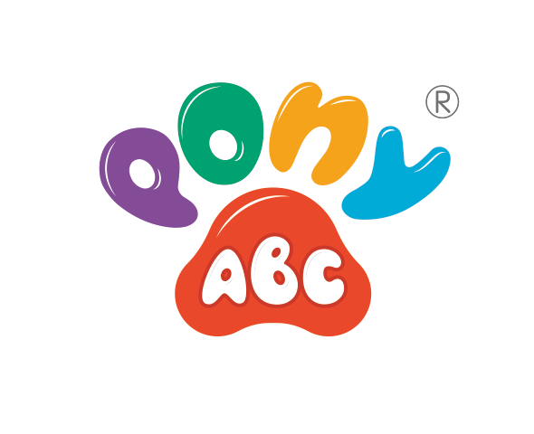

PonyABC Desktop
快速入門指南
適用於 PonyABC P5 點讀錄音筆
Windows 程式，可於 Microsoft Store 下載
Windows 程式，可於 Microsoft Store 下載
程式版本 0.3.17 · 印製日期 2026 年 9 月 29 日
一年保養
您的 P5 點讀錄音筆由購買日起享有一年保養。請於以下網址登記：
register.ponyabc.uk
掃描二維碼，或在程式首頁按 註冊您的點讀錄音筆 。
掃描即可登記
我們的官方網站
ponyabc.co.uk
這份印刷指南未必反映最新版本的程式。 請到我們的網站下載最新程式，並閱讀完整說明書（八種語言）。
支援：marketing@ponyabc.co.uk
掃描即可前往
準備 開始之前
- 安裝 PonyABC Desktop ，可於 Microsoft Store 免費下載（掃描二維碼）。
- 連接點讀錄音筆 ，請使用 可傳輸資料的 USB 線。只用藍牙並不足夠，有些線亦只供充電。
- 開啟程式。 首頁會顯示 「P5 點讀錄音筆已連接」。如未顯示，請按 重新偵測。
Microsoft Store
1 把書本放進點讀錄音筆

- 開啟 BOOK 資料庫。程式會用一句話說明有甚麼新內容，以及大約需時多久。
- 按 同步書本，不需要逐本挑選。
- 請保持點讀錄音筆連接電腦。 一本較大的書本約需二十分鐘。
1 ⋯然後重新開機

4. 見到 「完成！」時，請拔出點讀錄音筆，並 關機再開啟。第一次開機會稍慢，因為點讀錄音筆正在準備新書本。
空間不足？ 程式會先檢查，並告訴您尚欠多少空間。請先備份並刪除部分錄音，然後再同步一次。
2 保存孩子的錄音

- 開啟 我的錄音，然後按 備份我的錄音。副本會保留在這部電腦。
- 要放回錄音，請按 放回點讀錄音筆。如果該貼紙號碼已有錄音，可試聽兩段再選擇。
- 改名 可為錄音改一個您認得的名稱。
3 更新點讀錄音筆（Windows）
- 開啟 韌體 ，然後按指示操作。
- 請選擇 是 ，回應 Windows 的授權提示。
- 完成後，請將點讀錄音筆關機再開啟。
更新期間請勿拔出點讀錄音筆，也不要關閉程式。
4 更改語言
設定 → 介面語言 （八種語言）
「PonyABC」為註冊商標。© 2026 MACROKINETIC MEDIATECH LIMITED.
快速入門指南 · 程式版本 0.3.17 · 2026 年 9 月 29 日
快速入門指南 · 程式版本 0.3.17 · 2026 年 9 月 29 日